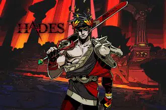

Hoy en portada
Analisis
ANÁLISIS CASCOS EPOS H3 HYBRID
Actualmente el mercado de periféricos para audio está muy saturado debido a la cantidad ingente de modelos ofrecidos por diferentes compañías y cada una de ellas trata de hacerse hueco dentro del mundo del entretenimiento digital. Sin embargo, siempre hay quien intenta diferenciarse del resto mediante la calidad de sus productos o alguna característica que la hace especial. En esta entrada comentamos los cascos de la serie H3 de la marca EPOS, en concreto del modelo Hybrid. El sonido es un aspecto muy importante a la hora de disfrutar plenamente de un videojuego; de hecho, las experiencias que ofrecen ciertos videojuegos cambian sustancialmente si los jugamos con unos buenos cascos. Por ejemplo, un título donde nos pareció relevante este aspecto, fue con Hellblade Senua’s Sacrifice. Ninja Theory, creadores del videojuego, siempre recomendaron disfrutar de su título con auriculares, pues de este modo se conseguía potenciar el efecto que atormenta a Senua, su protagonista, la cual escucha voces en su cabeza. Por lo tanto, usar unos buenos cascos favorece la inmersión del jugador. leer mas
ANÁLISIS HADES
Hades me ha enamorado. Llevarse el galardón de mejor juego del año 2020 creo que se queda corto para esta obra maestra de Supergiant Games. A mis más de treinta años jugando ya es difícil volverme loco de pasión con un título y Hades lo ha conseguido. Un juego al que di una oportunidad por recomendación de un amigo y me arrepiento de no haberlo hecho antes. Su manido género, el de los roguelite, puede que no le haga destacar en un primer vistazo pero en el momento en el que mueres por primera vez sabes que este juego es especial. La idea de empezar desde cero cada vez que fallamos en un roguelite es algo que no me fascina pero en Hades quieres morir una y otra vez. Y esto es porque es la única forma de avanzar en una historia que cada vez nos atrapa más. La premisa es sencilla: somos Zagreo, hijo de Hades, que cansados de la tiranía de nuestro padre decidimos escapar del Inframundo. A este no le hará gracia e intentará impedírnoslo. Pero como Zagreo es muy majo, contará con la ayuda de los dioses del Olimpo para huir. No os vamos a contar más de la historia porque termina enganchando como la mejor de las series. leer masNOTICIAS
NINTENDO SWITCH Y SU JUEGO EN LA NUBE
Nintendo nos presentó al luchador que completará la plantilla de Sup er Smash Bros. Ultimate (Switch, 2018). Toda una sorpresa y una buena elección: Sora de la saga Kingdom Hearts. Un personaje querido entre los jugadores que nos trajo una noticia más: los videojuegos de esta serie llegarán pronto a Nintendo Switch. Algo previsible que se termi naran lanzando en la consola más vendida a lo largo del año en Japón pero no tanto la forma en la que lo harán. No veremos un lanzamiento físico ni digital sino en la nube. Una Cloud version no muy bien rec ibida por gran parte de la comunidad. leer mas